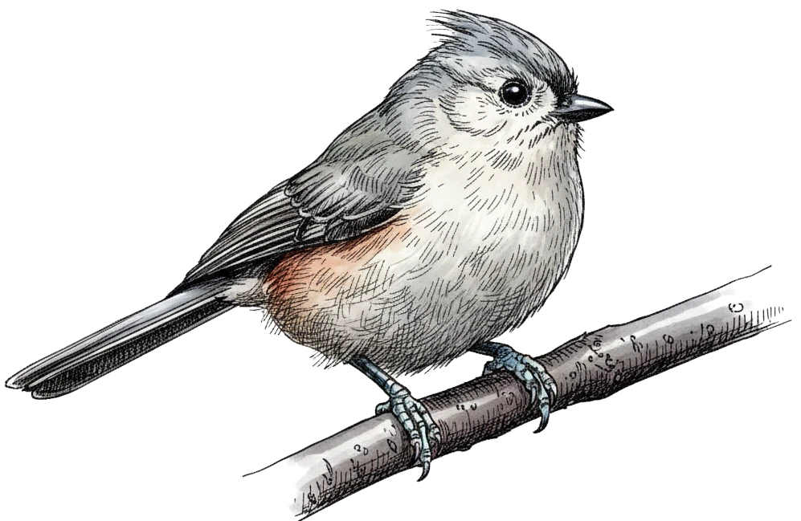

Typst 功能速览与样例
这份文档展示了 Typst 的功能以及在当前网页模板下的效果。上方是实际渲染效果，下方的代码块是对应的源代码。
注意
本文档不是详细的 Typst 教程。本文档的目的是展示各种 Typst 元素在当前模板下的渲染效果，顺带展示写法。
如果你之前从未接触过 Typst 和标记语言，建议先阅读 Wiki 页面 及其中的资料，进行了解和学习后再来阅读本文档。
1. 字体与文本修饰
这里展示了 粗体、斜体、下划线、删除线、上划线、上标 E=mc2、下标 H2O。重要内容可以使用 高亮标记。
这里展示了 *粗体*、_斜体_、#underline[下划线]、#strike[删除线]、#overline[上划线]、上标 E=mc#super[2]、下标 H#sub[2]O。重要内容可以使用 #highlight[高亮标记]。你可以通过空行来实现分段。
这是新的一段。你可以通过在行末添加\来实现换行。
这是新的一行。
你可以通过空行来实现分段。
这是新的一段。你可以通过在行末添加`\`来实现换行。\
这是新的一行。目前 #line() 函数还不支持 HTML 导出，但可以使用 #html.hr() 添加分隔线。
如果要显示特殊字符，需要转义：* _ # $ @
如果要显示特殊字符，需要转义：\* \_ \# \$ \@网站的视觉外观由 CSS 控制，你目前不能在 Typst 中直接改变文字的 颜色、大小 或 字体 等样式。如需修改，请在 assets/custom.css 文件中添加自定义 CSS 样式。
你目前不能在 Typst 中直接改变文字的 #text(fill: blue)[颜色]、#text(size: 14pt)[大小] 或 #text(font: "Liu Jian Mao Cao")[字体] 等样式。2. 多级标题
开头的“Typst 功能速览与样例文档”是一级标题，上面的 “2. 多级标题” 是二级标题。
三级标题
四级标题
=== 三级标题
==== 四级标题3. 链接
你可以使用 #link() 函数添加链接，例如：
- 这是一个外部网页的链接。
- 这也是一个外部链接。
你也可以链接到本网站的其他位置，例如：
- 这是一个指向 PDF 文档的链接。你可以创建编译为 PDF 的 Typst 文档，例如这个 PDF 由名为
sample-PDF.typ的文件编译而来。你可以链接到编译的 PDF 文件，从而展示带有复杂格式的 PDF 文档，比如 PDF 版简历。 - 而这是一个指向本网站首页（即英文 CV）的链接。
- 这是一个指向 PDF 文档的链接。你可以创建编译为 PDF 的 Typst 文档，例如这个 PDF 由名为
- #link("https://github.com/Yousa-Mirage")[这是一个外部网页的链接]。
- #link("https://yousa-mirage.github.io/", "这也是一个外部链接")。
- 你也可以链接到本网站的其他位置，例如：
- #link("sample-PDF.pdf")[这是一个指向 PDF 文档的链接]。
- #link("/")[而这是一个指向本网站首页（即英文 CV）的链接。]4. 列表结构
这是一个混合列表的示例：
- 无序列表项 1
无序列表项 2
支持缩进层级
- 继续缩进
无序列表中可以插入有序列表
在当前层级添加段落内容
- 有序列表项 1
有序列表项 2 (自动编号)
子有序列表 A
- 有序列表中可以插入无序列表
- 子无序列表 B
- 术语列表
- 带有名称的列表项，适合用于名词解释。
- Typst
- 一个新的基于标记的排版系统。
- 无序列表项 1
- 无序列表项 2
- 支持缩进层级
- 继续缩进
+ 无序列表中可以插入有序列表
在当前层级添加段落内容
+ 有序列表项 1
+ 有序列表项 2 (自动编号)
+ 子有序列表 A
- 有序列表中可以插入无序列表
- 子无序列表 B
/ 术语列表: 带有名称的列表项，适合用于名词解释。
/ Typst: 一个新的基于标记的排版系统。5. 边栏、注释和参考文献
你可以在任何地方添加边栏内容。
Tufte 样式最鲜明的特点就是采用宽大的侧边栏布局，将注释、参考文献和图表直接并排展示在正文旁，取代了传统的脚注或尾注，在数字屏幕上复刻了经典学术著作般清晰、沉浸且图文对照的深度阅读体验。11 这是本网站首页写的话。
你可以使用 footnote() 函数添加注释，会自动添加到与正文齐平的侧边栏中，不需要再翻到网站末尾。22 脚注真的很打断阅读体验！这也是我使用 Tufte 样式制作博客模板的原因。
你可以使用 `footnote()` 函数添加注释。#footnote[脚注真的很打断阅读体验！]你可以使用 tufted.margin-note() 函数在任何地方添加任意的不分段的边栏内容。例如，你可以添加一行文本图片、行内代码、行内公式等33 box() 函数可以将内容设置在一段内。。  ⬆️这是一只鸭，这是
⬆️这是一只鸭，这是 一个行内代码，这是一个行内公式 。
这是换行文本
// 这是设置右侧图片和文本的 Typst 代码。
#tufted.margin-note[
#image("../../imgs/tufted-duck-male.webp")
]
#tufted.margin-note[
⬆️这是一只鸭，这是 `一个行内代码`，这是一个行内公式 $1 + 1 = 2$。\
这是换行文本
]你可以将参考文献导出为 .bib 文件，使用 bibliography() 函数将其引用到 Typst中，然后就可以使用 @ 引用它，就像这样(Tufte, 1973)。
默认会将使用的参考文献显示在调用 bibliography() 函数的位置。模板暂时不支持自动将参考文献展示在边栏中，但你可以手动引用44 Tufte, E. R. (1973). The Relationship between Seats and Votes in Two-Party Systems. American Political Science Review, 67(2), 540～554. https://doi.org/10.2307/1958782。
- Tufte, E. R. (1973). The Relationship between Seats and Votes in Two-Party Systems. American Political Science Review, 67(2), 540～554. https://doi.org/10.2307/1958782
然后就可以使用 `@` 引用它，就像这样@tufte1973relationship。
你可以手动引用#footnote[Tufte, E. R. (1973). The Relationship between Seats and Votes in Two-Party Systems. _American Political Science Review, 67_(2), 540～554. https://doi.org/10.2307/1958782]。
#bibliography("papers.bib", title: none, style: "american-psychological-association")你甚至可以编写一个 for 循环来手动展示 .bib 中的文献内容并进行排版：
- Tufte, Edward R., “The relationship between seats and votes in two-party systems,” American Political Science Review, 1973. DOI: 10.2307/1958782
- Tufte, Edward R., “Determinants of the outcomes of midterm congressional elections,” American Political Science Review, 1975. DOI: 10.2307/1958391
#import "@preview/citegeist:0.2.2": load-bibliography
#{
let bib = load-bibliography(read("papers.bib"))
for item in bib.values().rev() [
#let data = item.fields
- #data.author, "#data.title," #emph(data.journal), #data.year. DOI: #link(data.url)[#data.doi]
]
}你可以使用 tufted.full-width() 将内容以全宽度展现出来，例如这是一张超长的 MIKU：
#tufted.full-width[#image("miku.png")]6. 图片
你可以使用 figure() 函数来为任意的内容添加标题信息，特别是图片和表格，这也会显示在侧边栏中。
使用 image() 函数可以添加图片，使用 width、height 参数可以控制大小，例如 figure + image：

#figure(caption: "这也是鸭鸭。")[
#image("../../imgs/tufted-duck-female-with-duckling.webp", width: 250pt)
]
#image("../../imgs/gorilla.webp", height: 250pt)7. 表格
你可以使用 table() 函数创建简单的表格：
表 1 table() 函数生成的表格
| 姓名 | 简介 | 状态 |
| Alice | 前端开发者，喜欢 Rust | 在线 |
| Bob | 后端工程师，喜欢 Python | 离线 |
#figure(caption: [`table()` 函数生成的表格])[
#table(
columns:(1fr, 2fr, auto),
[*姓名*], [*简介*], [*状态*],
[Alice], [前端开发者，喜欢 Rust], [在线],
[Bob], [后端工程师，喜欢 Python], [离线],
)
]更推荐使用 @OrangeX4 大佬写的 tablem 包，根据 markdown 表格格式生成表格：
| Name | Location | Height | Score |
|---|---|---|---|
| John | Second St. | 180 cm | 5 |
| Wally | Third Av. | 160 cm | 10 |
#import "@preview/tablem:0.3.0": *
#tablem[
| *Name* | *Location* | *Height* | *Score* |
| :----: | :--------: | :------: | :-----: |
| John | Second St. | 180 cm | 5 |
| Wally | Third Av. | 160 cm | 10 |
]目前还不支持复杂的自定义表格设计。当然，你也可以直接 添加 PDF 或表格图片。
8. 代码块
使用 ``` 包裹代码来添加代码块，支持语法高亮，也可以和图片、表格一样使用 figure() 添加标题。我修改了代码块样式，并添加了行号和复制按钮。
代码 1 我会 Python。
# Python 中的斐波那契函数
def fib(n):
if n <= 1: return n
return fib(n-1) + fib(n-2)代码 2 我最近在学习 Rust。
fn main() {
println!("Typst 正是 Rust 编写的。");
}上述 Rust 代码块对应的 Typst 源代码如下：
#figure(caption: "我最近在学习 Rust。")[
```rs
fn main() {
println!("Hello, Typst!");
}
```
]9. 对齐、分栏与段落块
目前 Typst 编译 HTML 还不支持段落对齐方式和分栏，但你可以在 PDF 中实现。这在简历、分栏论文、演示文稿中非常有用。
你可以使用同样是 @OrangeX4 大佬写的定理包 theorion 来实现各种特殊的段落样式，例如：
这是一个引用块。你可以在这里引用相当长的内容。你可以在这里引用相当长的内容。你可以在这里引用相当长的内容。你可以在这里引用相当长的内容。支持换行、分段，甚至可以在其中添加新的引用块。
- 列表
This is a code block.
提示
这是一个提示块。注意
这是一个注意块。重要
这是一个强调块。警告
这是一个警告块。小心
这也是一个警告块。#import "@preview/theorion:0.6.0": *
#quote-block[
这是一个引用块。你可以在这里引用相当长的内容。你可以在这里引用相当长的内容。你可以在这里引用相当长的内容。你可以在这里引用相当长的内容。支持换行、分段，甚至可以在其中添加新的引用块。
#quote-block[这是引用块内部的引用块。]
- 列表
`This is a code block.`
]
#tip-block[这是一个提示块。]
#note-block[这是一个注意块。]
#important-block[这是一个强调块。]
#warning-block[这是一个警告块。]
#caution-block[这也是一个警告块。]10. 数学公式
Typst 使用 $ $包裹公式。行内公式嵌入在文字中，写法是 $ $ 内紧跟公式内容，例如 。
例如 $f(x) = x^2$。而块级公式独占一行，写法是 $ $ 与公式内容之间存在空格，例如
$ A = pi r^2 $包含分式、根号、求和与积分：
$ integral_0^infinity e^(-x^2) d x = sqrt(pi) / 2 $
$ sum_(k=0)^n k = 1 + ... + n = (n(n+1)) / 2 $矩阵与行列式：
$
mat(
1, 2;
3, 4
) dot vec(x, y) = vec(5, 6)
$多行对齐公式：
图 2 多行对齐公式
#figure(caption: "多行对齐公式")[
$
f(x) & = (x + 1)^2 \
& = x^2 + 2x + 1
$
]超长的块级公式（突破屏幕宽度）：
使用 tufted.full-width() 可以让公式占用整个页面宽度并居中显示：
更加复杂的公式和符号写法可参考官方文档。
11. 交叉引用
Typst 支持交叉引用功能。你可以为标题、图片、代码块等元素添加标签，然后在文档的其他位置引用它们。
这里链接到 “1. 字体与文本修饰” 部分。
这里链接到 代码 1 部分。
这里链接到 图 1 部分。
这里链接到 “7. 表格” 部分。
这里链接到 @ch1 部分。\
这里链接到 @code1 部分。\
这里链接到 @鸭鸭 部分。\
这里链接到 @tbl1 部分。对应的标签写法如下：
== 1. 字体与文本修饰 <ch1>
#figure(caption: "我会 Python。")[
... code block ...
]<code1>
#figure(caption: "这也是鸭鸭。")[
... image ...
]<鸭鸭>
#figure(caption: [`table()` 函数生成的表格])[
... table ...
]<tbl1>12. 编程特性
Typst 不但是一个标记排版语言，还是一门编程排版语言：
#let name = "Typst"
#if name == "Typst" [
#for i in range(3) [
这是 Typst #i！
]
] else [
这不是 Typst。
]这是 Typst 0！ 这是 Typst 1！ 这是 Typst 2！
#show "Latex": "Typst"
我爱 Latex!我爱 Typst!
// 支持自定义函数
#let greet(name) = [Hello, #name!]
#greet("World")\
#greet("Yousa Mirage")Hello, World!
Hello, Yousa Mirage!
13. 嵌入 Markdown
你可以使用 cmarker 将 Markdown 内容嵌入到 Typst 文档中。这在将现有 Markdown 文件集成到基于 Typst 的网站时尤其有用。要渲染数学表达式，请使用 mitex。例如这段代码：
#import "@preview/cmarker:0.1.8"
#import "@preview/mitex:0.2.7": *
// 这个 scope 是必要的
// 参见 https://typst.app/universe/package/cmarker#resolving-paths-correctly
#let scope = (image: (source, alt: none, format: auto) => figure(image(source, alt: alt, format: format)))
#let md-content = read("tufted-titmouse.md")
#cmarker.render(md-content, math: mitex, scope: scope)会将 "tufted-titmouse.md" 渲染为以下内容：
灰胸山雀 The Tufted Titmouse
灰胸山雀（Baeolophus bicolor）是一种小巧活泼的鸣禽，原生于北美东部的落叶林。其显著特征包括独特的灰色羽冠、乌黑的大眼睛和两侧锈红色的羽毛。这些鸟类是灵巧的觅食者，也是后院喂食器的常客。冬季时，它们常与山雀和䴓组成混合鸟群活动。其鸣声清脆如哨音，似在反复鸣唱 “peter-peter-peter”。

我们可以用 Logistic 增长方程来模拟它们的种群动态：
其中 表示种群， 表示内在增长率， 表示其栖息地的承载能力。
"tufted-titmouse.md" 渲染完毕。